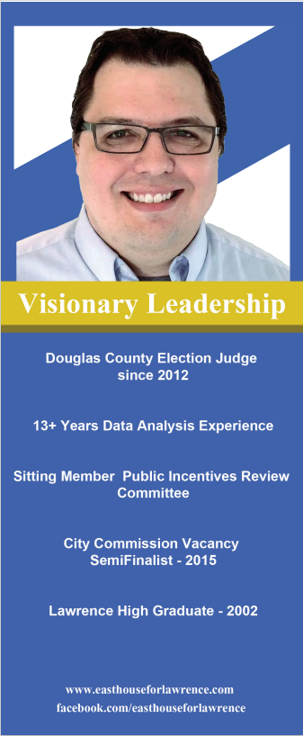
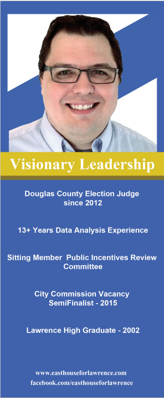

Easthouse
Problem
In 2017 I was approached by Ken Easthouse to create PR materials for his run for City Commission in Lawrence, KS. For this project I needed to create
a brand for him that was easily recognizable and could connect to his name, as well as could be recreated in yard signs, buttons, and pamphlets.
Insight
I sat down with Easthouse and discussed what he wanted to focus on in his campaign. He wanted to have the community connected together to face the problems the city was having. The themes he wanted for his brand was his name and that interconnectivity. The colors needed to be pretty simple as well because of his budgetary concerns. The yard sign in particular needed to be mostly white because of cost saving reasons.
Approach
After we spoke, I researched political brands that worked well. Simplicity was key, but also recognition. If it looked too generic, like the flag or simply his initials then it wouldn’t stand out against the crowd. But if it was too complicated then it would be hard to read, especially as a yard sign where people
drive by quickly. I used Illustrator because it allowed for the best use of vector and allowed quick changes as needed.
Solution
The key brand concept was using a key part of his name and creating a house silhouette with a road leading to it to show his is a path forward, then to
create a network of lines that interconnect and branch out to emphasize his idea of community. I kept it in the blues because its a color that invokes trust
and then red for his name to stand out. In the buttons I kept it simple with just a red banner around and the silhouette in the middle.
Result/Outcome
Overall, I believe the concept was a success. That core look he continued in his later campaigns. The biggest issue we faced was that we did not test the printing of the signs before the full order. As a result the print came slightly too small to be as easily readable as I had hoped. Lesson learned!
 
